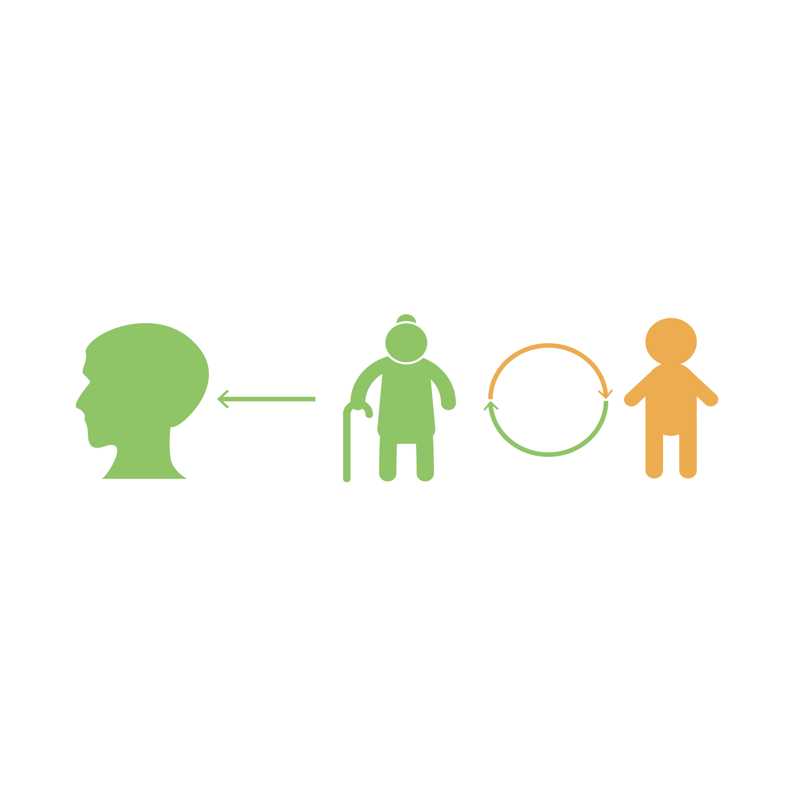

为什么要做这个项目?
YesterdayOnceMore是一个为老年失智症患者设计的项目。目前失智症困扰着很多家庭和老人，虽然医学界正在努力治疗这个病症，但是由于病症的来源多样，目前仍未有确切的物理疗法。因此我希望通过这个项目，从早期出发，提供给老人锻炼脑部记忆以及增进与家人互动的机会，以延缓和预防病症的发生。
目前在世界范围内，失智症患者数目已经达到了3600万。据研究表明，每个人在漫长的一生中约有百分之十的机会会患上此病症。年龄在85岁以上的老人中，每四个人中就会有一个人患上失智症。
我在2015年开始进行这个项目，因为是一个独立想要完成的项目，在进行的过程中遇到了很多的瓶颈，但是有时候停下来想想，也许我做这个项目并不只是因为失智症背后的各种研究数据，而更多的，这个项目有时候会让我想起身边的家人朋友。有时会想，也许这个项目以后不会成为多么成功的项目吧？但即便如此，我想我也还是会继续尝试尝试，因为我想至少贡献出那么的一点点力量，哪怕只改变一点点，也许也是好的。